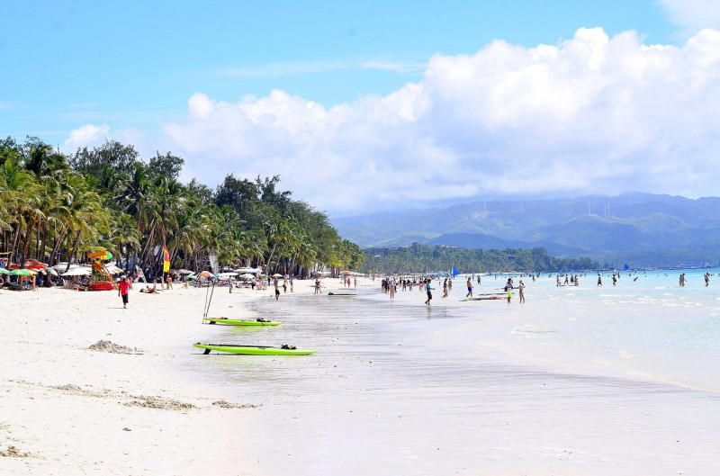

야자수가 늘어선 해변에 새하얀 모래, 에메랄드빛 투명한 바다로 유명한 휴양지다. 
11~5월은 건기로 야외 활동하기 좋지만 5월은 낮기온이 높아 매우 덥다. 건기 중에서도 1~4월의 강수량 가장 적다. 기온은 12~2월까지 상대적으로 낮은 편이며 3월부터 낮기온이 올라 5월에 가장 덥다. 우기에는 한낮에 1~2시간가량 스콜성 폭우가 쏟아지거나 밤새 비가 내린다.